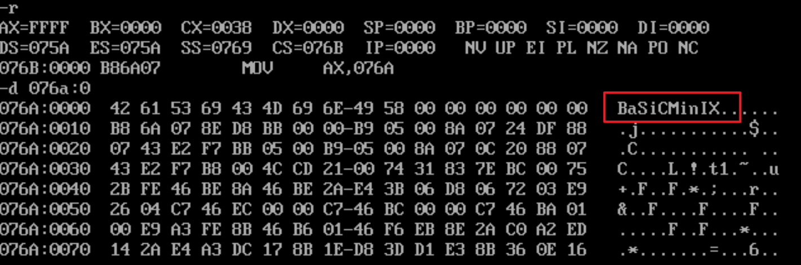
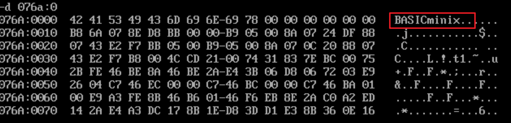

开始整活🏯
[bx+idata]
[bx] 可以用来指明一个内存单元，[bx+idata]也具有相同的功能且更为灵活。
[bx+idata]表示：偏移地址=(bx)+idata
例如：mov ax,[bx+200] 它的含义就是将一个内存单元的内容放入 ax 中，这个内存单元的长度为2个字节，偏移地址为 (bx)+200，段地址为 (ds)。将该命令用数学化的公式表达即为：(ax)=((ds)*16+(bx)+200)。
指令mov ax,[bx+200]也可以用如下形式表示
- mov ax,[200+bx]
- mov ax,200[bx]
- mov ax,[bx].200
[bx+idata]与数组的关系
问题：将 datasg 中定义的字符串转为大写，第二个字符串转为小写
源码：
1 | assume cs:codesg,ds:datasg |
初始时的寄存器和内存状态，我们可以观察到我们所写入的数据以及后面的指令

结束后内存的状态

而以上的方法并没有将 [bx+idata] 利用起来，我们依旧是通过两个循环实现我们的目的。
我们可以将这两个等长的字符串看成是2个数组，在一个循环中对2个数组同时进行处理。这两个数组的不同之处就是数组起始地址的偏移地址不一样，而每次处理时对于这两个数组的偏移地址地址都是相同的，而数组起始地址的偏移地址我们可以通过 [dx+idata] 的方式来改变。
使用 [dx+idata] 的源码
1 | assume cs:codesg,ds:datasg |
汇编语言和C语言相呼应的地方
- 汇编语言：0[bx]，5[bx]
- C语言：a[i]，b[i]
SI和DI
它们是寄存器中和 bx 功能相近的寄存器，它们之间的区别就是：si 和 di 不能分成两个8位寄存器来使用。
- [bx+si] 偏移地址=(bx)+(si)
- [bx+si+idata] 偏移地址=(bx)+(si)+idata
- [bx+200+si]=[200+bx+si]=200[bx][si]=[bx].200[si]=[bx][si].200
暂存数据
当我们程序变得复杂庞大时，需要对一些数据进行暂存，而寄存器数量有限，我们只能通过内存来帮助我们存储这些临时数据，但是如果只是通过简单地获取内存中的一个单元地址来存储我们的数据的方法是不可取的，因为我们必须要记住我们将数据放入了哪个内存单元中，这样程序会很容易混乱。
解决办法就是利用栈。
一般来说，在需要缓存数据的时候，我们都应该使用栈来操作。
本文作者：GhDemi
文章默认使用 CC BY-NC-SA 4.0 协议进行许可，使用时请注意遵守协议。